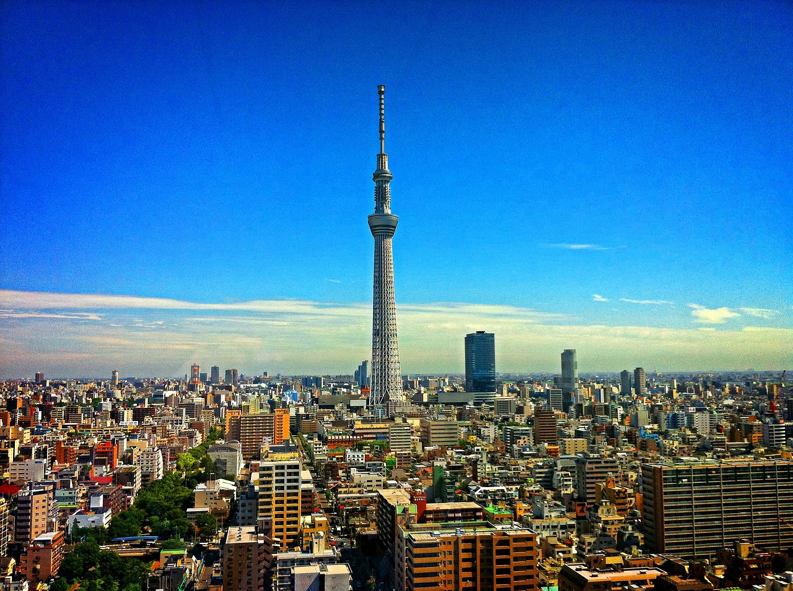
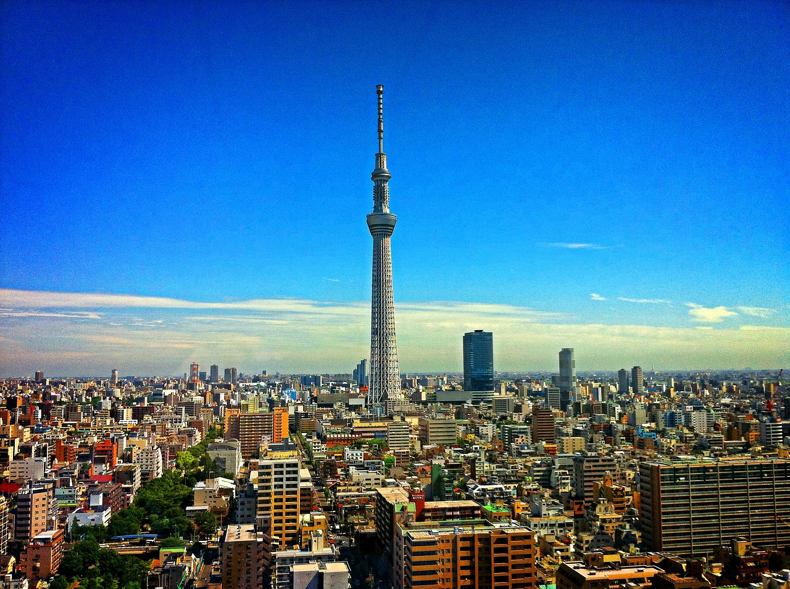

Whether you are a climbing enthusiast or looking for a stunning view of nature, a visit to Mount Fuji provides you with an unforgettable contemplative experience in the lap of stunning nature.
Your visit to Tokyo will take you on a journey full of enjoyable experiences and scenes beyond imagination, for an unforgettable experience amidst the perfect harmony between authenticity and modernity.